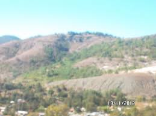

|
|
| Principal | cuquila esta ubicado en
La comunidad de Santa María Cuquila, Tlaxiaco, Oaxaca. Está ubicada al suroeste de la Capital del estado, a una altitud de 1225 metros y la distancia por la carretera No,125 es de 220 km ., enclavada en la región Mixteca, con una población aproximada de 13.500 habitantes, contando con sus rancherías y parajes. Es una Presidencia Municipal de usos y costumbresPerteneciente a Santa María Asunción Tlaxiaco, Oaxaca., pera llegar a esta comunidad saliendo de la capital del Estado, la ruta a seguir y mas corta es por la supercarretera, con salida a Nochixtlan, rumbo a Huajuapan de León, hasta encontrar un entronque con rumbos diferentes a Huajuapan/México y Tlaxiaco/Pinotepa, pasando por Teposcolula y Yolomecatl se encuentra la ciudad de Tlaxiaco, que es cabecera de Distrito, a 20 km . sobre la carretera Putla – Pinotepa, se encuentra ubicada Santa María Cuquila, comunidad netamente indígena, con el dominio de la lengua Mixteca y un rezago económico, social y cultural. |
 |